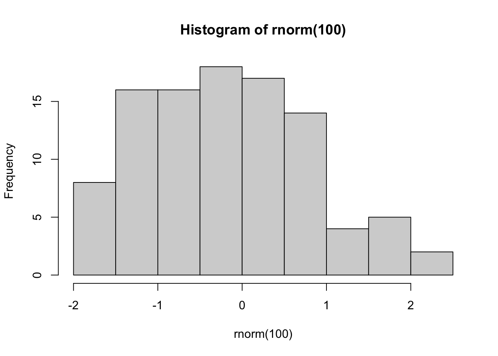
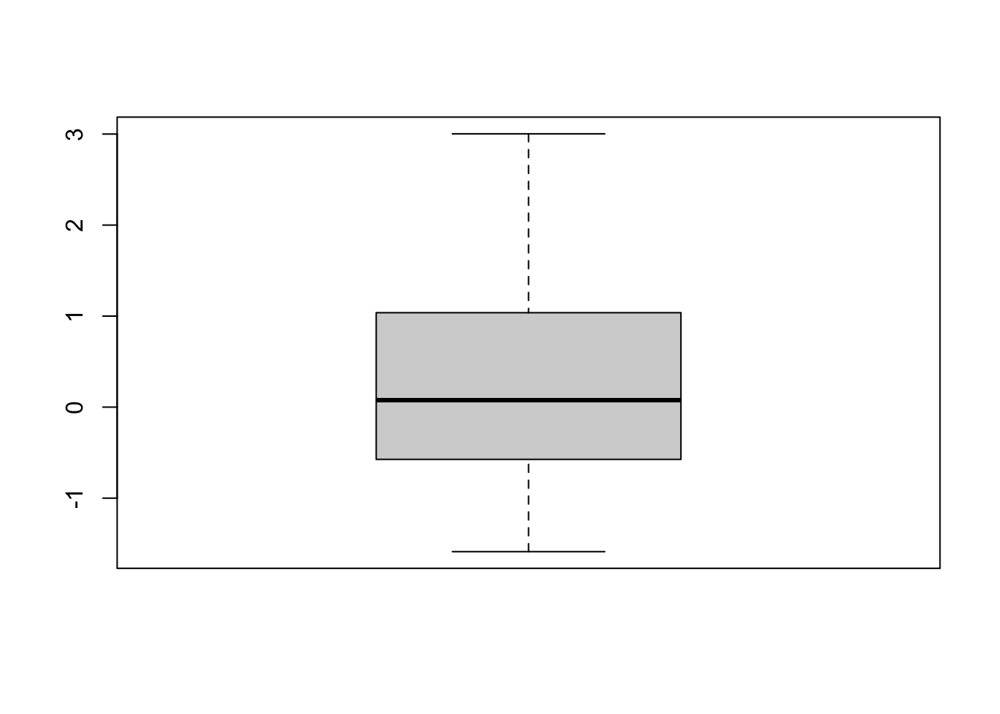

Polysemous Verbs with Light and Concrete Senses
A Corpus Linguistics Replication Study

class: germanische sprachen im vergleich
tutor: Hüning / Konvicna
term: WS25/26
1 - # 20250125(15.03)
2 - # 16052.gemini.corpus.btt
3 - #########################
4 - # wtf: huening germanic languages im vergleich: create gemini chat corpus - extract keywords
5 - ############################################################################################
6 - get.btt<-function(){
7 - library(httr)
8 - library(jsonlite)
9 - url<-'https://search.dip.bundestag.de/api/v1/plenarprotokoll-text?f.aktualisiert.start=2022-12-06T10%3A00%3A00&f.aktualisiert.end=2022-12-06T20%3A00%3A00&f.datum.start=2021-01-11&f.datum.end=2021-01-15&f.vorgangstyp=Gesetzgebung&f.vorgangstyp_notation=100&format=json&apikey=OSOegLs.PR2lwJ1dwCeje9vTj7FPOt3hvpYKtwKkhw'
10 - url<-'https://search.dip.bundestag.de/api/v1/plenarprotokoll-text?f.aktualisiert.start=2022-12-06T10%3A00%3A00&f.aktualisiert.end=2022-12-06T20%3A00%3A00&f.datum.start=2021-01-11&f.datum.end=2021-01-15&f.vorgangstyp=Gesetzgebung&f.vorgangstyp_notation=100&format=json&apikey=OSOegLs.PR2lwJ1dwCeje9vTj7FPOt3hvpYKtwKkhw'
11 - url<-'https://search.dip.bundestag.de/api/v1/plenarprotokoll-text?f.aktualisiert.start=2022-12-06T10%3A00%3A00&f.aktualisiert.end=2022-12-06T20%3A00%3A00&f.datum.start=2021-01-11&f.datum.end=2021-01-15&f.vorgangstyp=Gesetzgebung&f.vorgangstyp_notation=100&format=json&apikey=OSOegLs.PR2lwJ1dwCeje9vTj7FPOt3hvpYKtwKkhw'
12 - qs<-"f.aktualisiert.start=2022-12-06T10%3A00%3A00&f.aktualisiert.end=2022-12-06T20%3A00%3A00&f.datum.start=2021-01-11&f.datum.end=2021-01-15&f.vorgangstyp=Gesetzgebung&f.vorgangstyp_notation=100&format=json&apikey=OSOegLs.PR2lwJ1dwCeje9vTj7FPOt3hvpYKtwKkhw"
13 - baseurl<-"https://search.dip.bundestag.de/api/v1/plenarprotokoll-text"
14 - turl<-"https://search.dip.bundestag.de/api/v1/plenarprotokoll-text?f.datum.start=2021-01-11&f.datum.end=2021-01-15&format=json&apikey=OSOegLs.PR2lwJ1dwCeje9vTj7FPOt3hvpYKtwKkhw"
15 - qs<-unlist(strsplit(turl,"\\?"))
16 - qx<-qs[2]
17 - baseurl<-qs[1]
18 - apikey<-"OSOegLs.PR2lwJ1dwCeje9vTj7FPOt3hvpYKtwKkhw"
19 - qx<-strsplit(qs,"=|&")
20 - qx
21 - qdf<-data.frame(matrix(qx[[2]],ncol = 2,byrow = T))
22 - colnames(qdf)<-c("key","value")
23 - qdf
24 - #######################################
25 - get.q<-function(baseurl,qdf,d.start,d.end){
26 - #qdf$value[1:2]<-""
27 - m<-grep("datum.start",qdf$key)
28 - qdf$value[m]<-d.start
29 - m<-grep("datum.end",qdf$key)
30 - qdf$value[m]<-d.end
31 - qdf$value[grep("key",qdf$key)]<-Sys.getenv("DIP_APIKEY")
32 - #params<-list(qdf)
33 -
34 - #params<-qdf$value
35 - q<-list()
36 - for(k in 1:length(qdf$key)){
37 - q[qdf$key[k]]<-qdf$value[k]
38 - }
39 - q
40 - #params
41 - #names(params)<-qdf$key
42 - print(q)
43 - print(baseurl)
44 - #params<-list(params)
45 - #params
46 - r<-GET(baseurl,query=q)
47 - }
48 - #r2<-r
49 - getdf<-function(range){
50 - d.start<-range[1]
51 - d.end<-range[2]
52 - r2<-get.q(baseurl,qdf,d.start,d.end)
53 - #r2<-GET(turl)
54 - r2
55 - t<-fromJSON(content(r2,"text"))
56 - #t$documents$text
57 - tdf1<-data.frame(date=t$documents$datum,text=t$documents$text)
58 - }
59 -
60 - # range<-c("2021-01-01","2021-03-31")
61 - # tdf1<-getdf(range)
62 - # range<-c("2021-04-01","2021-12-31")
63 - # tdf2<-getdf(range)
64 - # range<-c("2021-04-01","2021-05-30")
65 - # tdf3<-getdf(range)
66 - # range<-c("2021-06-01","2021-07-31")
67 - # tdf4<-getdf(range)
68 - # ptdf<-rbind(tdf1,tdf2,tdf3,tdf4)
69 -
70 - ### first dataset
71 - ###################################
72 - range<-c("2025-01-01","2025-31-03")
73 - tdf1<-getdf(range)
74 - range<-c("2025-04-01","2025-12-31")
75 - tdf2<-getdf(range)
76 - range<-c("2025-04-01","2025-05-30")
77 - tdf3<-getdf(range)
78 - range<-c("2025-06-01","2025-07-31")
79 - tdf4<-getdf(range)
80 - range<-c("2025-08-01","2025-11-30")
81 - tdf5<-getdf(range)
82 - ptdf.2<-rbind(tdf1,tdf2,tdf3,tdf4,tdf5)
83 -
84 - #save(ptdf,file = paste0(Sys.getenv("HKW_TOP"),"/SPUND/2025/huening/ptdf_btt01.RData"))
85 - }
86 - #ptdf.2<-get.btt()
87 -
88 - #save(ptdf.2,file = paste0(Sys.getenv("HKW_TOP"),"/SPUND/2025/huening/ptdf_btt02.RData"))
89 -
90 - get.gpt<-function(){
91 - ### load btt corpus
92 - load(paste0(Sys.getenv("HKW_TOP"),"/SPUND/2025/huening/ptdf_btt01.RData"))
93 -
94 - credcsv<-Sys.getenv("CRED_GEN") # !VIP dont put directly into read.csv()
95 - cred<-read.csv(credcsv)
96 - e<-parse(text=cred$q[1])
97 - e
98 - # q<-"transkribus"
99 - m<-grep("gemini",cred$q)
100 - q<-cred$q[m]Ausgangslage
We explored frequencies of verbs in light and concrete use in the Santa Barbara Corpus of Spoken American English.
We aim to replicate Mehl (2021).
Hypotheses
- Light senses are more frequent
- Concrete senses are more salient
- Embodied experience shapes meaning
Methoden
We built a corpus database of SBC data available for download.
After annotating for light and concrete use, we counted frequencies.
p3
p2


Conclusion
We observe a preference for the lemma make in spoken context. The create-light relation expectation was not fulfilled.
References
Gilquin (2008) Mehl (2021) UCSB Santa Barbara Corpus